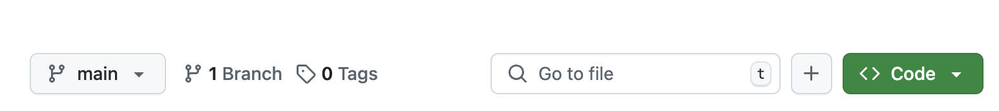
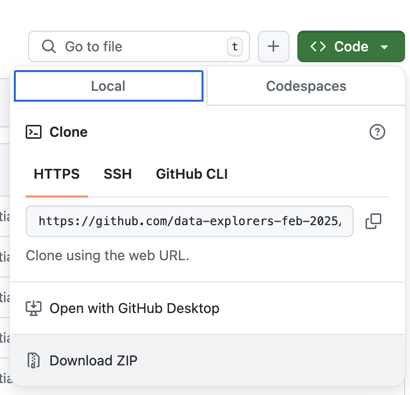
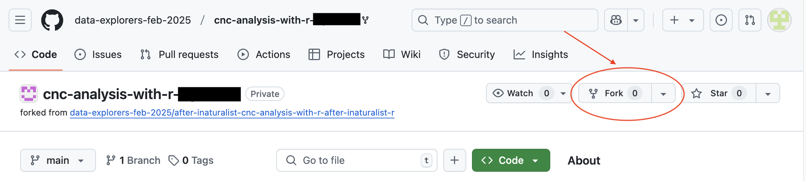
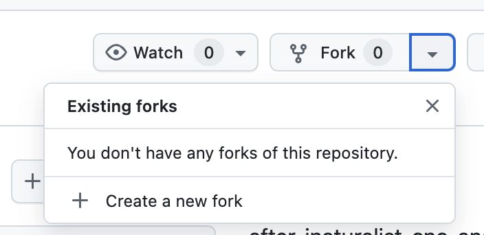
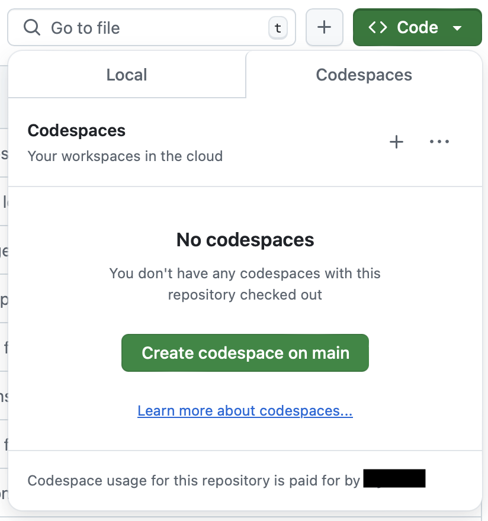
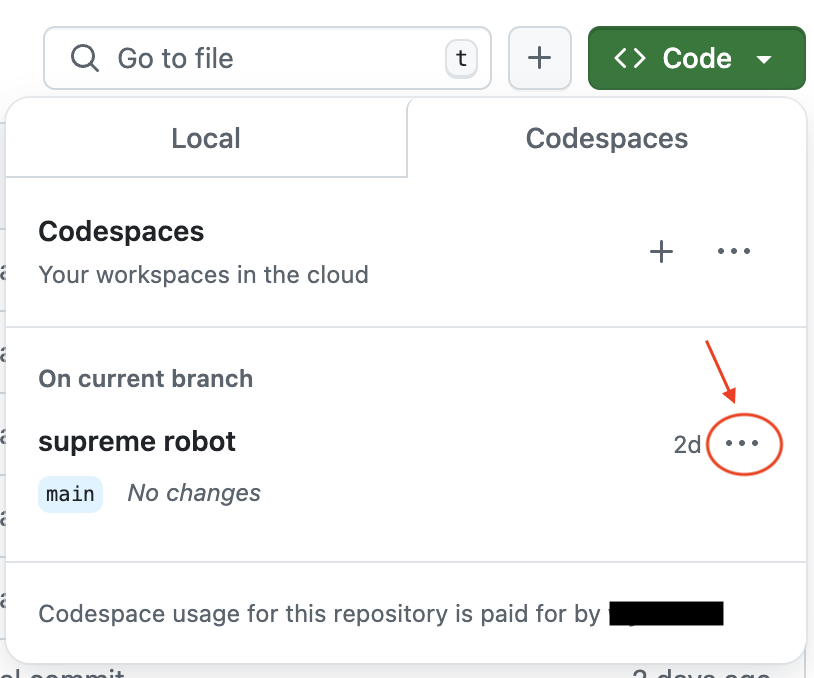
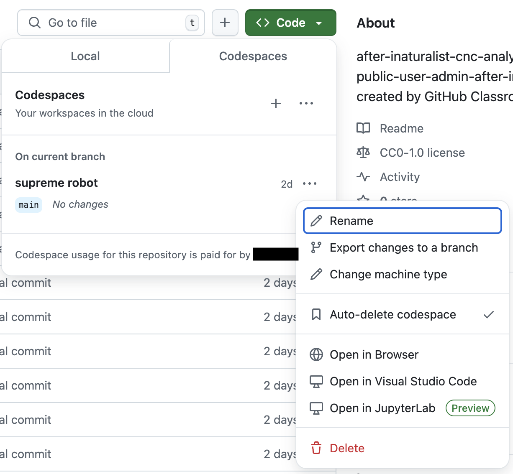

Coding after the workshop
For those who are interested in continue coding in R after the workshop, here are instructions to do so.
Accessing your files after the workshop
You will have access to the Codespaces during the workshop so that you can write and run your code. About 2 weeks after the workshop, Codespaces will be turned off. You will still have access to the files in your repository, but you won’t be able use the workshop’s Codespaces to run the code.
In order to continuing working on your code after the workshop, you need to set up a development environment that can run R code.
Running your code on your local machine
If you want to run R code on your computer, you need to install RStudio, R, and R packages on your computer.
- Complete the steps for Setup - local page > “Install R and RStudio”
- Complete steps for Setup - local page > “Install R packages”
- Download workshop repository to your computer.
Go to data-explorers-feb-2025 account page, and you should see your repository. Click on your repository. The repository page will have a green “Code” button.

When you click on “Code”, there will be a “Local” tab > “Download ZIP” option. Click on “Download ZIP”. A zip file for your repository will be saved to your computer.

Unzip the file. Click on workshop.Rproj file to start RStudio on your machine. Now you can continue editing and running your project code.
With R, RStudio, and R packages installed on your computer, you can also create new projects. Follow the instructions on Setup - local page > ”Organizing your project folder” to set up new projects.
Running your code on Github
Currently, every free Github account has access to 120 core hours per month to run Codespaces. When you start a Codespace, by default it uses 2 cores. This means you can run a Codespace for 60 hours per month (120 core hours / 2 cores = 60 hours). If you choose 4 cores, you can run a Codespace for 30 hours per month (120 / 4 = 30). For more information, visit Codespaces Billing.
You can either continue to use your repository in data-explorers-feb-2025 or you can copy to your repository to your Github account.
Copy repository to your Github account
To copy your repository into your Github account, go repository page. There is a “Fork” button. Creating a fork of a repository is one way to copy a repository in Github. Click the “Fork” button.

Click “Create a new fork” in the popup.

On the “Create a new fork” page, fill in the repository name, optionally add a description, and click “Create fork” button.
A copy of the repo will be added to your Github account.
Start a Codespace
Whether you use the repo in in data-explorers-feb-2025 or the repo in your Github account, the steps to start a Codespace is the same.
- Click the green “Code” button.
Click “Codespaces” tab.
If there are no Codespaces for the repo, click the green “Create codespace on main” button. The browser window loads the codespace.

If a Codespace exists for the repo, click the three dots in the “On current branch” section.

Click “Open in Browser” in the popup window. This will restart an existing Codespace in a browser tab.
